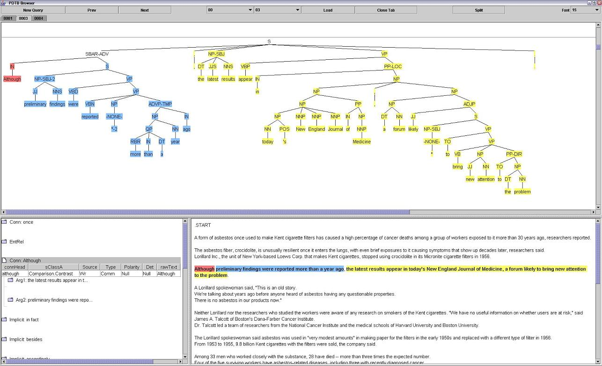
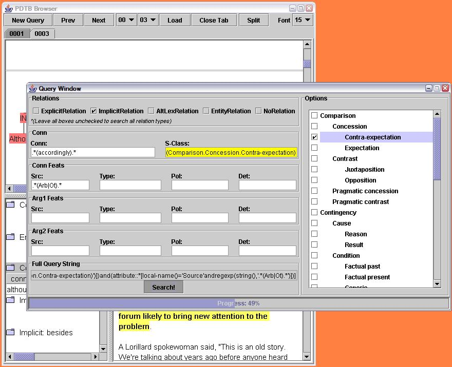
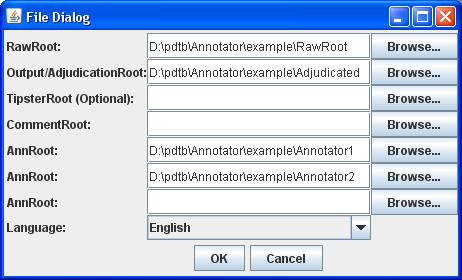
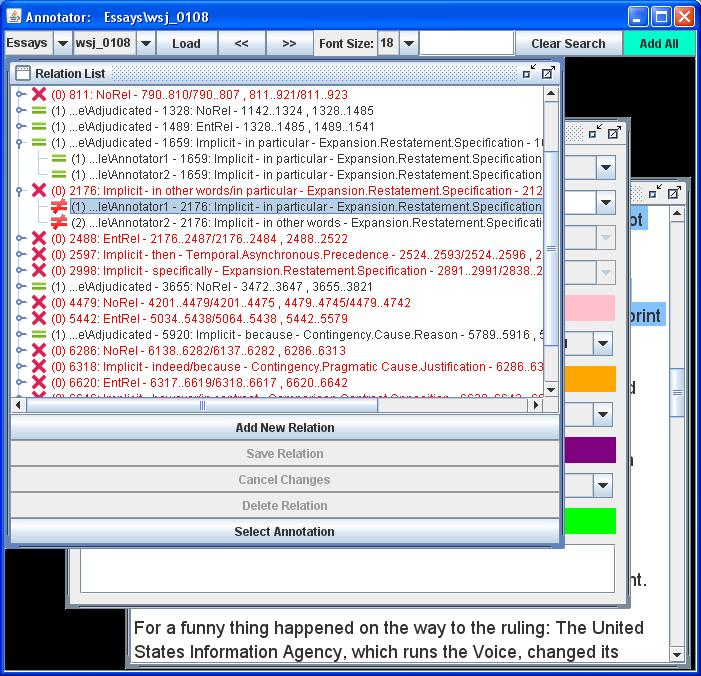
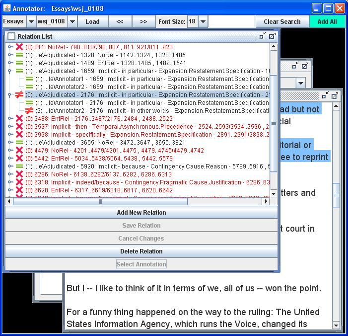

|
University of Pennsylvania |
Institute For Research in Cognitive Science |
 |
PDTB 2.0 TOOLS AND DOCUMENTATION
The Browser / API (0.2.9)This is an API to interact with the Penn Discourse Treebank , and Penn Treebank annotations. See the PDTB User Manual for terminology and a description of the file formats expected. There are two distributions of this API:
System requirements: Java™ 1.4.2. The API relies on Java™ for platform independence. However, the portability of component graphics is not always seamless. We test mostly on Linux and marginally on Windows. Problems on other platforms cannot be supported. Mac Users - Pre 0.2.4 the bottom left window of the browser appears garbled under the default look and feel (Aqua). This can be fixed without upgrading your version by running: cd PDTBUser java -Dswing.defaultlaf=javax.swing.plaf.metal.MetalLookAndFeel -jar pdtb.jarVersion 0.2.4 uses this (Metal) look and feel. Questions/bugs etc:
Contacts: Nikhil Dinesh - first name followed by d at seas dot upenn dot edu
Geraud Campion - first name followed by at seas dot upenn dot edu
Change log:
Launch the PDTB Browser via Java Web Start. A screenshot of the browser (parse trees on the top, PDTB annotations bottom left, and the raw text on the bottom right) is given below. Arg1 is highlighted in yellow, Arg2 in blue, the connective in red, and the features associated with the connective can be seen on the bottom left. The bottom left window can be used to select connectives and arguments. Clicking on a connective shows the features associated. Double clicking toggles between showing and hiding the arguments. Clicking on an argument will show the features. The spans associated with attribution will be added in the second release of the PDTB, and so clicking on the features has no effect. Nodes in the parse tree can be collapsed for viewing without scrolling. For example, the PP-LOC node in Arg1 (in yellow) has been collapsed. Clicking on a parse tree node toggles between expanding and collapsing. The combo boxes (drop down lists) in the middle correspond to the section and file numbers (on the left and right respectively). Only files under PdtbRoot, which have associated files in PtbRoot, and RawRoot can be loaded (the boxes will let you select only valid files). These are supplied as commandline arguments as mentioned above. When the Load button is clicked the files correponding to the section and file numbers selected in the combo boxes are loaded as a tab. The Close Tab button closes the tab currently in focus. The buttons Prev and Next switch to the previous and next files (if any) from the file denoted by the combo boxes. These buttons were added in v0.2.7.  Graphical Query SupportThe button New Query brings up a Query Window, allowing you to build a PDTBXPath search on the entire corpus. Here is a screenshot. XPath SupportThe API supports XPath queries on the PDTB annotations, and PTB annotations independently. For joint queries one needs to query the PDTB, and use the results to query the PTB. XPath support is achieved via Jaxen (Jaxen is bundled with the distributions and a separate download is not required).This is not intended as a replacement for tgrep, or various other query tools written for the PTB. The mechanisms used here are significantly slower, as each file will have to be queried independently. The advantage that this API offers is a more accessible programming model. As of v0.2.3, the query speeds are about 4 times faster on average. The following queries were run (v0.2.3) on a machine with an Intel Pentium4 (at 2.4GHz, 1G memory) processor, running Suse Linux (total counts of results were produced):
See the API docs of the following packages for more info: edu.upenn.cis.pdtb.xpath and edu.upenn.cis.ptb.xpath PDTBXPathA simple top level query interface to the PDTB (examples are given toward the bottom of the page). Usage is as follows:cd PDTBUser java -Xmx300M -Xms300M -classpath "pdtb.jar" edu.upenn.cis.pdtb.xpath.PDTBXPath argsThe arguments are as follows:
--rawRoot RawRoot (or -r RawRoot)
--ptbRoot PtbRoot (or -p PtbRoot)
--pdtbRoot PdtbRoot (or -d PdtbRoot)
--outputRoot OutputRoot (or -o OutputRoot. This will serve as the result PdtbRoot.
OutputRoot should not exist when this is run)
--xpath XPathExpression (or -x XPathExpression)
-c (generates total counts in addition to the files)
-b (opens results in the browser. The saved results can always be opened in
the browser at a later time, by specifying OutputRoot as the PdtbRoot
argument to the browser.)
Or modify this Perl script appropriately, and place it in the PDTBUser directory. Here is another Perl script with example queries, and some slides explaining the overall design. These files use the standard XPath syntax. We have added extensions to XPath specific to the PDTB. Since this a growing list, we have moved it to a separate PDTB XPath Extensions page. Scripts containing example queries are now part of the user distribution. Users unfamiliar with Java should go here for a tutorial on how to run Java programs. The most common error is setting the classpath wrong, which results in output of the form: Exception in thread "main" java.lang.NoClassDefFoundError: edu.upenn.cis.pdtb.xpath.PDTBXPath Please make sure that the classpath includes the "pdtb.jar" file in the PDTBUser directory. That is if you run the command from a directory other than PDTBUser the option should be specified as -classpath "....path to...pdtb.jar" . The XPath expression should select Element nodes listed below. If any other kind of node or object is returned by the query, the program exits. The full XPath functionality can be accessed via the API. The following is the list of Elements, their children, and attributes:
Note that the Source, Type, Polarity, and Det attributes appear on all arguments except those of EntityRelation and NoRelation. The expression If an Element is selected by an expression, the closest ancestor (or the node itself) which is a child of PDTBRelationList will be output. This is so that the results can be loaded in the browser. If the -c option is specified total counts of the number of objects selected is produced. This will usually be greater than or equal to the number of relations saved in the OutputRoot. Here is a sample command line invocation for the Bourne shell:
cd PDTBUser
java -Xmx300M -Xms300M -classpath "pdtb.jar" edu.upenn.cis.pdtb.xpath.PDTBXPath \
-r Corpora/PTB/raw/wsj \
-p Corpora/PTB/combined/wsj \
-d Corpora/PDTB/pdtb/wsj \
-o Corpora/PDTB/PDTBImplicitBecause \
-x "//ImplicitRelation[@conn1 = 'because']" -c -b
Note that the output directory specified by -o, should not exist prior to
invocation.
See the XPath recommendation for further info on XPath. For querying the syntax as well, use the API. The Annotator---Running---Requirements:
..raw/section/ ..ann/ ..comments/ The names of the folders do not matter. You are required to have at least one section folder inside raw. Each of the rawtext files must go into any of the section folders. For the annotation and comments folder, no sections are required during the first run. Any annotation and comment files that are created by this program will parallel the hierarchy of the raw section folders. Start the program and you will be given a File dialog. With the above structure, you would select "raw" as the "RawRoot", "ann" as the "AnnRoot", and "comments" as the commentRoot. The first time you run the program from a new directory, these fields will be blank. After running, your settings will be saved in the same directory as the jar file as AnnSettings.txt. To change the combo box choices in the program, you can edit Options.cfg. The numbers in the sets of choices represent the zero-based index of the default choice. These numbers are required for the first 8 items. The lists under the items must be in alphabetic order for this to work. If you delete Options.cfg, the jar will revert back to a default Options.cfg inside the jar at: Annotator.jar\edu\upenn\cis\anntool\settings\Options.cfg This file will be copied back out to the same directory as the jar file next time you start the Annotator. ---Using---Now, when the Annotator starts, you should be able to choose a raw text file by selecting its section number and the file name. Click load to load the raw text and all of the annotations for that file.Now you can create a new relation or select a relation from the list and edit and delete the relation. If you make any changes to a relation, you will not be able to switch relations, load, or exit without saving the relation or canceling the changes. For editing spans, the colors of the buttons match with the colors of the spans. To create a span, you can select the text and then click the corresponding span button. To select multiple spans, hold down ctrl (Windows/Linux) or Cmd (Mac - untested) or Spacebar (All) between selections. To deselect a spanlist, click the corresponding span button again. There is one more handy feature that lets you search for a token. As you type, all instances of a whole token will be highlighted in blue-green. You can also add all instances of this token to the relation list as an Explicit connective by clicking the "Add All" Button. You can save any relation even if you have not completely filled out all of its required values. These relations will show up with a red background in your relation list. You can also save comments in the big text box in the bottom right corner. These comments will be saved separately from the annotation files for convenience when parsing the annotation files later. ---Annotated File Structure---Each annotated relation is simply a pipe "|" delimited line with the following format:Relation Type|Conn Span|Conn Src|Conn Type|Conn Pol|Conn Det|Conn Feat Span|Conn1|SClass1A|SClass1B|Conn2|SClass2A|SClass2B|Sup1 Span|Arg1 Span|Arg1 Src|Arg1 Type|Arg1 Pol|Arg1 Det|Arg1 Feat Span|Arg2 Span|Arg2 Src|Arg2 Type|Arg2 Pol|Arg2 Det|Arg2 Feat Span|Sup2 Span For relation types that do not have a particular field, these fields are simply left blank
---Comments File Structure---The comments files use the java properties class to allow key, value pairs, where:key = Relation Type|Conn Span|Arg1 Span|Arg2 Span value = A Multiline Comment ---About---- The source code is available here: Annotator-src.zip.- Compiled with Java 1.5.0_17 (for compatibility with most Macs) - For bugs or feature requests please feel free to e-mail Geraud Campion at geraud@seas.upenn.edu The Adjudication Functionality of the Annotator---Running---Requirements:
..raw/section/ ..adjudicated/ ..ann1/section/ ..ann2/section/ ..comments/ The names of the folders do not matter. You are required to have at least one section folder inside raw. Each of the rawtext files must go into any of the section folders. Each of the annotation roots must follow the same section/file structure as the raw root. For the adjudication and comments folder, no sections are required during the first run. Any adjudication and comment files that are created by this program will parallel the hierarchy of the raw section folders. Start the program and you will be given a File dialog as shown:  As you specify the annotation roots, additional text boxes will appear. With the above structure, you would select "raw" as the "RawRoot", "adjudicated" as the "Output/AdjudicationRoot", "ann1" as the first "AnnRoot", "ann2" as the second "AnnRoot", and "comments" as the commentRoot. The first time you run the program from a new directory, these fields will be blank. After running, your settings will be saved in the same directory as the jar file as AnnSettings.txt. To change the combo box choices in the program, you can edit Options.cfg. The numbers in the sets of choices represent the zero-based index of the default choice. These numbers are required for the first 8 items. The lists under the items must be in alphabetic order for this to work. If you delete Options.cfg, the jar will revert back to a default Options.cfg inside the jar at: Annotator.jar\edu\upenn\cis\anntool\settings\Options.cfg This file will be copied back out to the same directory as the jar file next time you start the Annotator. ---Using---When the Annotator starts, you should be able to choose a raw text file by selecting its section number and the file name. Click load to load the raw text and all of the annotations for that file. You can see in the "Relation List" pane that all annotations are grouped together if they are annotations of similar relations. Relations are considered similar if either of the conditions hold:
 ---Annotated File Structure---Each annotated relation is simply a pipe "|" delimited line with the following format:Relation Type|Conn Span|Conn Src|Conn Type|Conn Pol|Conn Det|Conn Feat Span|Conn1|SClass1A|SClass1B|Conn2|SClass2A|SClass2B|Sup1 Span|Arg1 Span|Arg1 Src|Arg1 Type|Arg1 Pol|Arg1 Det|Arg1 Feat Span|Arg2 Span|Arg2 Src|Arg2 Type|Arg2 Pol|Arg2 Det|Arg2 Feat Span|Sup2 Span For relation types that do not have a particular field, these fields are simply left blank
---Comments File Structure---The comments files use the java properties class to allow key, value pairs, where:key = Relation Type|Conn Span|Arg1 Span|Arg2 Span value = A Multiline Comment ---About---- The source code is available here: Annotator-src.zip.- Compiled with Java 1.5.0_17 (for compatibility with most Macs) - For bugs or feature requests please feel free to e-mail Geraud Campion at geraud@seas.upenn.edu The PTB-Free BrowserThe PTB-Free Browser allows you to easily view annotation files without the need to convert the annotation files. The disadvantage of this browser is that the annotations are not aligned with the Penn Tree Bank.---Running---Requirements:
The Conversion ToolThe Conversion tool is useful if you would like to use the Annotation Tool to annotate files for the PDTB Browser. It lets you convert PDTB Browser files to Annotation files, do annotations with those files, and then convert the Annotated files back to PDTB Browser files.---Running---Requirements:
---Using---When you start the Conversion tool, you will have to select which way you want to convert the files, using the radio button.For converting from the browser files to annotation files, you need to provide, for input, the locations of the Rawtext file root, the PTB file root, and the original pdtb file root. The files will be output to the AnnRoot location. For converting from the annotation files to browser files, you need to provide, for input, the locations of the Rawtext file root, the PTB file root, the Annotation file root, and the Connective Head file. Please note that when converting annotation files to browser files, any relations that are incomplete will be skipped. Incomplete relations are indicated by a red background in the relation list in the Annotator tool. The files will be output to the New PDTB Root location. The temporary folder is used for intermediate files and will be deleted automatically at the end of conversion. The Standoff PTB (SPTB) needs to be created if this is the first time running an Annotation to PDTB file conversion. To create this, you just need to provide an empty folder for SptbRoot. Provide that same location for each successive conversion. The conversions may take some time after clicking the "convert" button. Conversion from PDTB to Ann takes about 1-2 min. Conversion from Ann to PDTB takes about 3-5 min. The file locations get saved in a file called "ConvertSettings.txt" in the same directory as Conversion.jar. ---Problems---During conversion from Annotation files back to PDTB files, if a file exists in the annotation root, but the corresponding file does not exist in the raw root or ptb root, that file is skipped in the conversion (for example, log files or merge files).There are also a few known cases where the raw or ptb files have errors. These files prevent a conversion of the corresponding pdtb files. These are cases where the text of the rawtext files does not completely match the text of the lexical leaf nodes in the ptb files. If new annotations are necessary for these cases, you can fix the raw files and ptb files yourself or do the annotations by hand. If fixing the raw files and ptb files, please delete the sptb files from previous conversions so that new ones will be created using the fixed files. The following is a list of the known rawtext-ptb problem file pairs: 0004, 0142, 0203, 0285, 0455, 0749, 0998, 1625, 2170, 2312 DO NOT BOTHER ANNOTATING THESE FILES. There is no way to convert them without introducing some non-standardized technique. ---About---- The source code is available here: Conversion-src.zip.- Compiled with Java 1.5.0_17 (for compatibility with most Macs) - For bugs or feature requests please feel free to e-mail Geraud Campion at geraud@seas.upenn.edu |
|||||||||||||||||||||||||||||||||||||||||||||||||||||||||||||||||||||||||||||||||||||||||||||||||||||||||||||||||||||||||||||||||||||||||||||||||||||||||||||
| |||||||||||||||||||||||||||||||||||||||||||||||||||||||||||||||||||||||||||||||||||||||||||||||||||||||||||||||||||||||||||||||||||||||||||||||||||||||||||||